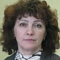

Дошкольное отделение школы № 1415
В 2015 году 43% первоклассников Школы № 1415 пришли из дошкольного отделения.
- улица Академика Королёва, 4к3
Воспитатели
Воспитатели, которых чаще всего благодарят родители (отзывы и профили сотрудников взяты с официального сайта школы):|
Муз. рук.
Романова Альбина Владимировна
17 благодарностей |
Воспитатель
Клычева Татьяна Анатольевна
15 благодарностей |
Воспитатель
Кондрашкина Надежда Федоровна
10 благодарностей |
Воспитатель
Верстова Светлана Юрьевна
10 благодарностей |
 Физ. рук.
Сальникова Елена Семеновна
Физ. рук.
Сальникова Елена Семеновна
10 благодарностей |
Воспитатель
Безшапошнова Юлия Сергеевна
9 благодарностей |

Воспитатель
Лихачева Татьяна Александровна
9 благодарностей |
Воспитатель
Семченко Елена Юрьевна
9 благодарностей |
|
Воспитатель
Натарова Светлана Ивановна
8 благодарностей |
Воспитатель
Морякова Людмила Григорьевна
7 благодарностей |
Воспитатель
Февралева Елена Александровна
4 благодарности |
Воспитатель
Хандусь Наталья Викторовна
4 благодарности |
|
Воспитатель
Кондрашкина Дарья Александровна
1 благодарность |
Воспитатель
Семенова Ирина Александровна
1 благодарность |
Муз. рук.
Апакидзе Нино Гурамовна
1 благодарность |
Воспитатель
Ермакова Елена Викторовна
1 благодарность |
Отзывы
Данные собраны c официального сайта школы и через форму для отзывов.
ЧАЕПИТИЕ! Больше 20 лет я не была на чаепитии!
И благодаря сыну, а также дружному преподавательскому коллективу группы №5, мы с мужем снова стали участниками настоящего чаепития с самоваром, баранками и сладким чаем!
Но началось все с ПОТРЯСАЮЩЕГО выступления еще таких маленьких, но в то же время взрослых детей!
Выступление покорило той непосредственностью, на которую способны только дети. Глаза каждого малыша светились гордостью и радостью. Нельзя передать словами ту радость, которой светились глаза каждого малыша, выходящего на сцену. Каким гордым был каждый ребенок, читающий стихотворение. И сколько ЖЕЛАНИЯ победить излучали участники эстафет.
А после выступления дети пригласили всех на великолепное чаепитие.
Чувства радости и счастья переполняли нас с мужем сегодня. ЭМОЦИИ – вот что сделало этот день неповторимым.
Мы выражаем огромную благодарность воспитателям группы №5 Верстовой Светлане Юрьевне, Кондрашкиной Надежде Фёдоровне, помощнику воспитателей Надежде Ивановне и музыкальному руководителю Романовой Альбине Владимировне за их труд, терпение, самоотверженность в работе, за их любовь и радушие, с которым они встречают детей и нас каждое утро.
Огромное спасибо за ваш профессионализм и за искреннюю доброту и заботу о наших детях!!!
С уважением,
Надежда Зверева
Вложенный файл
И благодаря сыну, а также дружному преподавательскому коллективу группы №5, мы с мужем снова стали участниками настоящего чаепития с самоваром, баранками и сладким чаем!
Но началось все с ПОТРЯСАЮЩЕГО выступления еще таких маленьких, но в то же время взрослых детей!
Выступление покорило той непосредственностью, на которую способны только дети. Глаза каждого малыша светились гордостью и радостью. Нельзя передать словами ту радость, которой светились глаза каждого малыша, выходящего на сцену. Каким гордым был каждый ребенок, читающий стихотворение. И сколько ЖЕЛАНИЯ победить излучали участники эстафет.
А после выступления дети пригласили всех на великолепное чаепитие.
Чувства радости и счастья переполняли нас с мужем сегодня. ЭМОЦИИ – вот что сделало этот день неповторимым.
Мы выражаем огромную благодарность воспитателям группы №5 Верстовой Светлане Юрьевне, Кондрашкиной Надежде Фёдоровне, помощнику воспитателей Надежде Ивановне и музыкальному руководителю Романовой Альбине Владимировне за их труд, терпение, самоотверженность в работе, за их любовь и радушие, с которым они встречают детей и нас каждое утро.
Огромное спасибо за ваш профессионализм и за искреннюю доброту и заботу о наших детях!!!
С уважением,
Надежда Зверева
Вложенный файл
Открытый урок «Планета знаний» в 5й группе
23 мая у нашего сына, Зверева Ивана, прошел открытый урок «Планета знаний», проведенный Сальниковой Еленой Семеновной.
Елене Семеновне удалось выстроить урок таким образом, что и дети, и родители, не заметили, как прошло время. Интеллектуальные блоки занятия чередуются с подвижными заданиями-играми, в которых участвует каждый ребенок. Именно этот принцип смены деятельности позволяет детям быть все время вовлеченными в процесс и усваивать новый материал «играючи».
Как показал открытый урок, «Планета знаний» - это комплексные развивающие занятия, на которых ребенок тренирует память, внимание, мышление, логику, приобретает навыки письма и чтения.
Спасибо Вам огромное, уважаемая Елена Семеновна!
Семья Зверевых.
Вложенный файл
23 мая у нашего сына, Зверева Ивана, прошел открытый урок «Планета знаний», проведенный Сальниковой Еленой Семеновной.
Елене Семеновне удалось выстроить урок таким образом, что и дети, и родители, не заметили, как прошло время. Интеллектуальные блоки занятия чередуются с подвижными заданиями-играми, в которых участвует каждый ребенок. Именно этот принцип смены деятельности позволяет детям быть все время вовлеченными в процесс и усваивать новый материал «играючи».
Как показал открытый урок, «Планета знаний» - это комплексные развивающие занятия, на которых ребенок тренирует память, внимание, мышление, логику, приобретает навыки письма и чтения.
Спасибо Вам огромное, уважаемая Елена Семеновна!
Семья Зверевых.
Вложенный файл
Выражаем сердечную благодарность воспитателям группы N10 Клычевой Татьяне Анатольевне и Безшапошновой Юлие Сергеевне от семьи Сарибжанова Амира! Любимые наши воспитатели!!! Искренне благодарим за Ваш старательный труд и любовь подаренную детям. Каждый день Вы оставляете частичку своего тепла воспитанникам, нежно и заботливо оберегая их. Умело подобранные игры, сказки, упражнения создают волшебную атмосферу детства. Каждый ребёнок окружён теплом и заботой в Вашем присутствии. Детский сад для малышей это второй дом. Вам прекрасно удалось организовать уютный уголок, где лицо каждого ребёнка отражает радость и восторг. Так пусть же Ваши глаза всегда излучают счастье и добро. Желаем Вам долгих лет жизни, крепкого здоровья, искренней любви близких и успехов в профессиональной деятельности!!!
От лица родителей воспитанников группы №2 ДОУ-1 хочу выразить благодарность любимым воспитателям Светлане Ивановне и Татьяне Александровне и музыкальному работнику Альбине Владимировне за прошедший 3.03.16 праздник Мам!
Мы услышали много трогательных стихов, послушали замечательные песни про мам и бабушек, увидели веселые танцы и даже поучительную сценку. Это было долгожданное событие для наших детей, им очень хотелось от всего сердца поздравить всех любимых женщин. Они усердно готовились под руководством педагогов, смастерили яркие подарки, и им удалось подарить всем зрителям весеннее радостное настроение. Спасибо большое всем воспитателям за труд, неравнодушие и доброту!
Также хочется выразить благодарность и поздравить с Днем Рождения дорогую няню Александру Юрьевну, которая нежно заботится о наших детках с самого первого их дня в саду! Желаем ей крепкого здоровья, благополучия, успехов и большого счастья!
И, конечно, отдельное спасибо заведующей Валерии Борисовне за организацию работы всего сада, за непрерывные старания о том, чтобы наши дети получали всё необходимое, за то, что Вы всю душу вкладываете в свою работу!
Мы услышали много трогательных стихов, послушали замечательные песни про мам и бабушек, увидели веселые танцы и даже поучительную сценку. Это было долгожданное событие для наших детей, им очень хотелось от всего сердца поздравить всех любимых женщин. Они усердно готовились под руководством педагогов, смастерили яркие подарки, и им удалось подарить всем зрителям весеннее радостное настроение. Спасибо большое всем воспитателям за труд, неравнодушие и доброту!
Также хочется выразить благодарность и поздравить с Днем Рождения дорогую няню Александру Юрьевну, которая нежно заботится о наших детках с самого первого их дня в саду! Желаем ей крепкого здоровья, благополучия, успехов и большого счастья!
И, конечно, отдельное спасибо заведующей Валерии Борисовне за организацию работы всего сада, за непрерывные старания о том, чтобы наши дети получали всё необходимое, за то, что Вы всю душу вкладываете в свою работу!
Хочу выразить огромную благодарность воспитателям нашей любимой 8 и 9 группы - Елене Евгеньевне, Татьяне Александровне, Елене Александровне, Ирине Александровне и Анне Анатольевне. Специалисты высокого уровня! Все занятия - полный восторг! Спасибо вам за ваш труд, своевременные рекомендации для меня и помощь в воспитании ребенка. Спасибо за человеческое тепло которое вы дарите нашим детям, за те знания которые вы в них вкладываете, заботу о них, терпение и понимание. Спасибо за яркие, веселые праздники!
Отдельная благодарность нашей заведующей Валерии Борисовне за организацию работы в детском саду, за созданную благоприятную атмосферу. за ее всегда внимательное отношение и заботу о том, чтобы у нас все было хорошо!!!
Отдельная благодарность нашей заведующей Валерии Борисовне за организацию работы в детском саду, за созданную благоприятную атмосферу. за ее всегда внимательное отношение и заботу о том, чтобы у нас все было хорошо!!!
Уважаемая Людмила Григорьевна!
От всей души благодарим Вас за внимание и чуткое отношение к нашим деткам. Ваш труд воспитателя сделал из малышей полноценных творческих личностей, готовых к школе, получивших навык учебы, дружбы и стремления к знаниям.
Спасибо за то, что дети выросли добрыми, умными и развитыми людьми. Отдельное спасибо за интересные занятия с детьми, за спектакли, концерты и поделки.
Ваш труд, энергия, фантазия и профессионализм реализовались в наших детях.
Желаем Вам здоровья, удачи в делах и творческих педагогических успехов
Коллектив родителей гр.7, выпуск 2015 г.
Вложенный файл
От всей души благодарим Вас за внимание и чуткое отношение к нашим деткам. Ваш труд воспитателя сделал из малышей полноценных творческих личностей, готовых к школе, получивших навык учебы, дружбы и стремления к знаниям.
Спасибо за то, что дети выросли добрыми, умными и развитыми людьми. Отдельное спасибо за интересные занятия с детьми, за спектакли, концерты и поделки.
Ваш труд, энергия, фантазия и профессионализм реализовались в наших детях.
Желаем Вам здоровья, удачи в делах и творческих педагогических успехов
Коллектив родителей гр.7, выпуск 2015 г.
Вложенный файл
Уважаемая Елена Юрьевна!
Искренне благодарны Вам за воспитание наших детей, за заботу и внимание, за чуткость и творческое отношение к непростой работе воспитателя.
От души благодарим вас за атмосферу доброты и радости, в которой наши дети провели эти годы с Вами.
Спасибо за то, что научили наших детей вежливости, вниманию, честности и умению дружить.
Желаем Вам здоровья, благополучия в семье и хороших воспитанников в будущем.
Коллектив родителей гр.7, выпуск 2015 г.
Вложенный файл
Искренне благодарны Вам за воспитание наших детей, за заботу и внимание, за чуткость и творческое отношение к непростой работе воспитателя.
От души благодарим вас за атмосферу доброты и радости, в которой наши дети провели эти годы с Вами.
Спасибо за то, что научили наших детей вежливости, вниманию, честности и умению дружить.
Желаем Вам здоровья, благополучия в семье и хороших воспитанников в будущем.
Коллектив родителей гр.7, выпуск 2015 г.
Вложенный файл
Здравствуйте! Я пишу, чтобы поблагодарить воспитателей 10 группы - Татьяну Анатольевну Клычеву и Юлию Сергеевну Безшапошнову - за лучшее время наших детей в детском саду.
Татьяна Анатольена Клычева – прекрасный воспитатель, профессионал. Рядом с ней дети расцветают. Она умеет увлечь, придумать игры и занятия, сделать каждый день в саду особенным.
В нашей группе были такие праздники, каких не было больше ни у кого и нигде. Мастерская Деда Мороза, поиски сокровищ, чаепития, Масленицы, игры, поездки в музеи – это все задумки Татьяны Анатольевны. У нас были самые интересные занятия: дети узнали невероятно много, потому что Татьяна Анатольевна умеет показать многообразие мира.
Кроме того, Татьяна Анатольевна всегда находит общий язык с родителями. Дает важные, мудрые и полезные советы, когда они нужны. При этом она очень тактично доносит мысли, всегда остается в рамках профессиональной этики. Она понимает детей и старается наладить контакт с их семьями. Поэтому и группа у нас получилась такая дружная: общаются родители, общаются дети.
Мы гордимся Татьяной Анатольевной, ее успехами. Ее профессионализм подтвержден не только нашими отзывами, но признан победами на этапах городского конкурса «Лучший педагог года». Татьяна Анатольевна, для нас вы лучший педагог не только года, а каждого дня, проведенного вместе. Спасибо вам за спокойствие и любовь, которую вы подарили нашим детям!
И, конечно, спасибо Юлии Сергеевне Безшапошновой!
Юлия Сергеевна тонко чувствует детей. Она, как никто другой, понимает их и любит. И дети всегда отвечают ей взаимностью. Для Юлии Сергеевны нет мелочей: каждое детское слово – важно, каждая проблема стоит того, чтобы ее решить. Она помнит все подробности о каждом ребенке, и все, что интересно нашим детям! Юлия Сергеевна всегда улыбается, дарит тепло. Она на стороне ребенка. И при этом дети ее слушаются, по-настоящему уважают и любят. В какую бы группу Юлия Сергеевна ни пришла на замену – дети не хотят уходить вечером. Когда идут занятия – дети сидят с распахнутыми глазами, потому что занятие захватывает. На прогулке она всегда с ними на нашей площадке, придумывает игры.
И это, конечно, профессионализм. Но это и дар! Особый дар. Он или есть, или нет. У Юлии Сергеевны – есть. И нам невероятно повезло. Юлия Сергеевна, огромное спасибо за наших детей.
Татьяна Анатольена Клычева – прекрасный воспитатель, профессионал. Рядом с ней дети расцветают. Она умеет увлечь, придумать игры и занятия, сделать каждый день в саду особенным.
В нашей группе были такие праздники, каких не было больше ни у кого и нигде. Мастерская Деда Мороза, поиски сокровищ, чаепития, Масленицы, игры, поездки в музеи – это все задумки Татьяны Анатольевны. У нас были самые интересные занятия: дети узнали невероятно много, потому что Татьяна Анатольевна умеет показать многообразие мира.
Кроме того, Татьяна Анатольевна всегда находит общий язык с родителями. Дает важные, мудрые и полезные советы, когда они нужны. При этом она очень тактично доносит мысли, всегда остается в рамках профессиональной этики. Она понимает детей и старается наладить контакт с их семьями. Поэтому и группа у нас получилась такая дружная: общаются родители, общаются дети.
Мы гордимся Татьяной Анатольевной, ее успехами. Ее профессионализм подтвержден не только нашими отзывами, но признан победами на этапах городского конкурса «Лучший педагог года». Татьяна Анатольевна, для нас вы лучший педагог не только года, а каждого дня, проведенного вместе. Спасибо вам за спокойствие и любовь, которую вы подарили нашим детям!
И, конечно, спасибо Юлии Сергеевне Безшапошновой!
Юлия Сергеевна тонко чувствует детей. Она, как никто другой, понимает их и любит. И дети всегда отвечают ей взаимностью. Для Юлии Сергеевны нет мелочей: каждое детское слово – важно, каждая проблема стоит того, чтобы ее решить. Она помнит все подробности о каждом ребенке, и все, что интересно нашим детям! Юлия Сергеевна всегда улыбается, дарит тепло. Она на стороне ребенка. И при этом дети ее слушаются, по-настоящему уважают и любят. В какую бы группу Юлия Сергеевна ни пришла на замену – дети не хотят уходить вечером. Когда идут занятия – дети сидят с распахнутыми глазами, потому что занятие захватывает. На прогулке она всегда с ними на нашей площадке, придумывает игры.
И это, конечно, профессионализм. Но это и дар! Особый дар. Он или есть, или нет. У Юлии Сергеевны – есть. И нам невероятно повезло. Юлия Сергеевна, огромное спасибо за наших детей.
Добрый вечер.
Сегодня в группе №5 прошел открытый урок в рамках программы "Играю и развиваюсь".
На занятии малыши показали часть того, чему смогли научится за последние несколько месяцев:
- умение находить отличия,
- умение обобщать, переходя от частного к общему,
- умение выявлять закономерность, и даже умение приходить друг другу на помощь ))
Но на самом деле, эти достижения уходят на второй план, по сравнению с тем энтузиазмом и неподдельным интересом, которые дети проявляли в течение всего занятия. Малышам было по-настоящему ИНТЕРЕСНО, для них происходящее не было тяжелым занятием или уроком, для них это было ИГРОЙ.
Все это благодаря педагогу, ведущему курс занятий "Играю и развиваюсь" - Ермаковой Елене Викторовне! Спасибо огромное!
С уважением, Надежда Зверева
Сегодня в группе №5 прошел открытый урок в рамках программы "Играю и развиваюсь".
На занятии малыши показали часть того, чему смогли научится за последние несколько месяцев:
- умение находить отличия,
- умение обобщать, переходя от частного к общему,
- умение выявлять закономерность, и даже умение приходить друг другу на помощь ))
Но на самом деле, эти достижения уходят на второй план, по сравнению с тем энтузиазмом и неподдельным интересом, которые дети проявляли в течение всего занятия. Малышам было по-настоящему ИНТЕРЕСНО, для них происходящее не было тяжелым занятием или уроком, для них это было ИГРОЙ.
Все это благодаря педагогу, ведущему курс занятий "Играю и развиваюсь" - Ермаковой Елене Викторовне! Спасибо огромное!
С уважением, Надежда Зверева
Хочу выразить огромную благодарность нашим, без сомнения, чудесным воспитателям - Татьяне Анатольевне и Юлии Сергеевне (10 группа), а так же музыкальному педагогу Нино Гурамовне за прекрасный спектакль, который мы смотрели не так давно, но до сих под находимся под впечатлением. "Музыкальный магазинчик" - спектакль нестандартный и очень яркий. Неожиданный сюжет, продуманная инсценировка, музыкальное сопровождение - все настолько хорошо, что поневоле удивляешься: наши ли дети так профессионально играют. Они тонко чувствуют музыку, прекрасно поют, не стесняются выступать. Они молодцы! И все это в нашей выпускной группе стало возможно стараниями воспитателей, вкладывающих душу в каждый рабочий день. Любовь к работе, огромный профессионализм и доброе сердце - все это про наших педагогов. Спасибо вам: и за праздник, и за наших детей!
Добрый день! В нашем самом лучшем детском саду в подготовительной группе #6 вчера прошел замечательный праздник, посвященный 8 Марта - спектакль "Кошкин дом" по мотивам сказки С.Я. Маршака. Зрители были просто в восторге, а впечатления незабываемы! Поразили и потрясающие декорации, и волшебная музыка, и великолепное убранство зала, и, конечно, наши любимые дети, которые, как настоящие взрослые артисты, усердно репетировали, вживались в роли и волновались перед выходом, чтобы в очередной раз удивить всех своим талантом. Сколько сил Наталья Викторовна, Людмила Ивановна и Альбина Владимировна вложили, чтобы подарить нам и детям чудесное праздничное настроение! Каждый персонаж был по-своему хорош, а особенно яркими многим показались мама-свинья в исполнении Жени Кладовой и танец петушков - Андрея Бессмертного и Даниила Копнина. Отличная музыкальная сказка о доброте, настоящей дружбе и взаимовыручке порадовала и детей, и взрослых. Восторг и чувства гордости и счастья переполняли нас, когда мы смотрели спектакль. Все родители шестой группы выражают огромную благодарность нашим любимым воспитателям Наталье Викторовне и Дарье Александровне, художественному руководителю спектакля Людмиле Ивановне, музыкальному руководителю Альбине Владимировне и, конечно, заведующей детским садом Валерии Борисовне за их труд, терпение, самоотверженность в работе, за их любовь и радушие, с которым они встречают детей и нас каждое утро. От всей души поздравляем весь коллектив детского сада с наступающим праздником, желаем крепкого здоровья и много-много сил, дальнейших творческих успехов и весеннего настроения, солнца и тепла всем вам и вашим родным и близким! Огромное спасибо за ваш профессионализм и за искреннюю доброту и заботу о наших детях.
Загородникова Галина Николаевна
Директор
+7 495 602-20-41
Если вы нашли ошибку или неточность, пожалуйста, сообщите нам об этом.
Ученик, выпускник или родитель? Оставьте отзыв о детском саде.